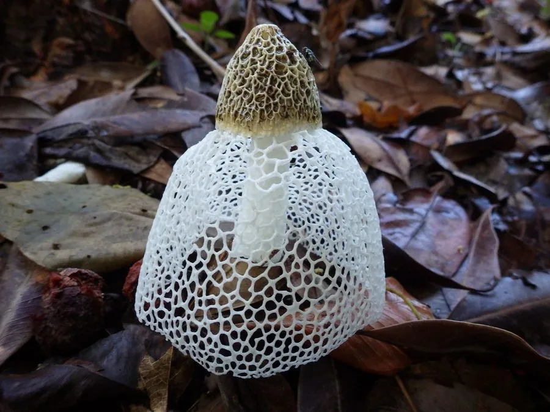

真菌 · 真菌界
竹荪 Phallus indusiatus

竹荪的菌柄顶端垂下一圈洁白的网状菌裙，形如纱裙，是名贵的食用菌，多生于竹林下的腐木与落叶层旁。
- 分类
- 门担子菌门纲伞菌纲目鬼笔目科鬼笔科属鬼笔属
- 栖息环境
- 竹林与阔叶林下腐木、落叶层，喜温暖湿润与散射光
- 地理分布
- 中国四川、云南、贵州、福建等地，东南亚也有分布
- 保护级别
- 暂无评估（可栽培食用菌）
物种志
竹荪是担子菌门鬼笔目的腐生真菌，子实体由菌盖、菌柄和菌裙组成。菌盖钟形，表面覆盖暗绿色、有臭味的产孢黏液，顶端有孔口；菌柄白色、海绵质，圆柱形，中空，长 10–20 cm；菌裙从菌盖下方垂下，白色，呈细密的网格状，长可达 10 cm，形似纱裙，是竹荪最显著的特征。孢子印淡绿色。整株形态优雅，被称为“雪裙仙子”。
竹荪野生于竹林、阔叶林下的腐木和落叶层中，靠分解有机质生长，中国西南的四川、云南、贵州是著名产区。它对环境要求较高，出菇期短，传统上多为野生采集，如今已能人工栽培。竹荪味道鲜美、口感脆嫩，是宴席上的名贵食材，常与鸡汤同炖；干制品香气更浓，市场价格较高。竹荪的产孢黏液有臭味，食用前通常要去掉菌盖，只保留菌柄和菌裙。
形态与习性
- 菌裙白色网状，长可达 10 cm
- 菌柄白色海绵质，长 10–20 cm
- 菌盖钟形，覆盖暗绿色产孢黏液
- 孢子印淡绿色
- 生境竹林与阔叶林下的腐木旁
- 采收期菌裙完全展开时
- 处理食用前去除带臭味的菌盖
趣味知识
- 竹荪的网状菌裙像一条白色纱裙，因此有“雪裙仙子”的雅称。
- 它的菌盖黏液又臭又黏，用来吸引昆虫传播孢子，食用前要摘掉。
- 竹荪生长极快，从破蕾到菌裙展开往往只需一两天。